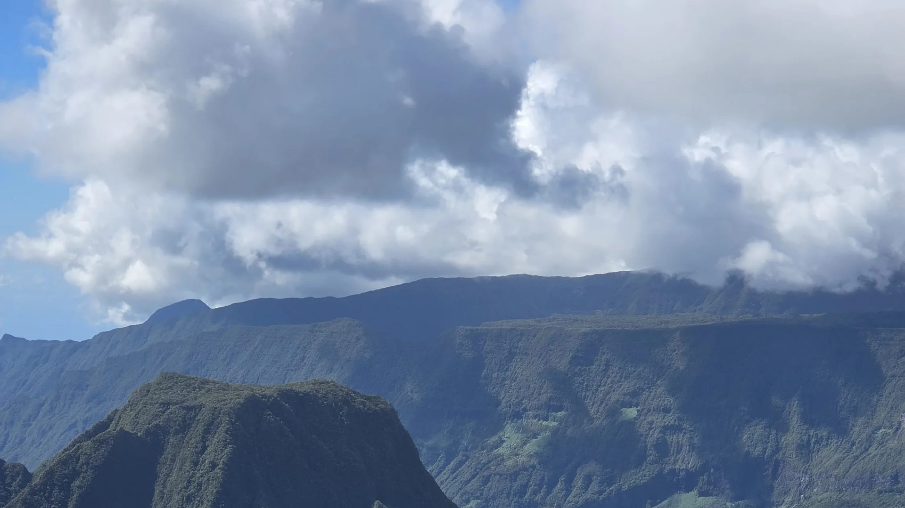

RUN TRANSFERT & SERVICES
« Des chauffeurs au service de La Réunion »
La Réunion, notre métier, votre sérénité.
Centrale de réservation T3P déclarée13 chauffeursAssociation loi 1901
La mobilité réunionnaise, du littoral aux sentiers.